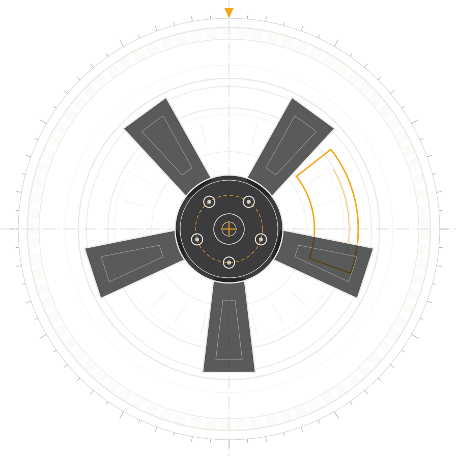
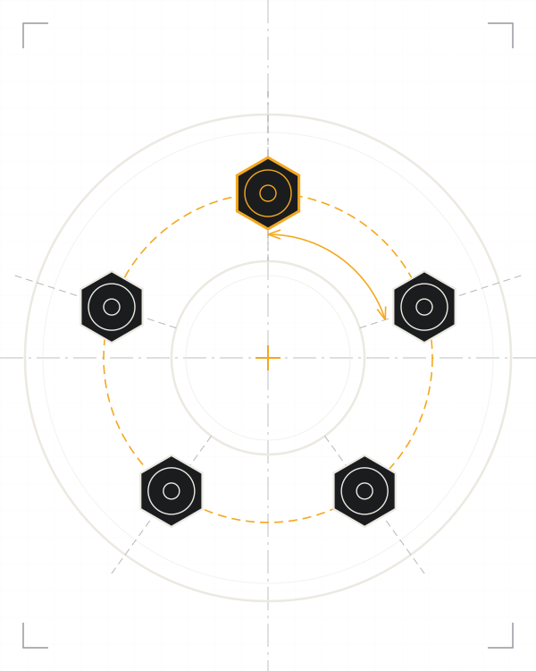

Auto-servis / Čadca
Keď auto potrebuje servis, nie výhovorky.
Servis vozidiel v Čadci. Zistíme, čo sa s autom deje, a povieme vám to priamo.
- Adresa
- Slovanská cesta 5047 · Čadca
- Telefón
- +421 903 567 844
- Otvorené
- Po–Pi 08:30–17:00
Služby
Základné oblasti, s ktorými sa na nás môžete obrátiť.
-
Diagnostika
Najprv zistiť problém. Potom ho riešiť.
Svieti kontrolka alebo sa auto správa inak ako zvyčajne? Pozrieme sa, čo sa deje.
-
Servis vozidiel
Pravidelná údržba, aby ste sa na auto mohli spoľahnúť.
-
Opravy
Niečo sa pokazilo? Povieme vám, v čom je problém, a dohodneme ďalší postup.
-
Pneuservis
Výmena pneumatík a práca s kolesami.
Nenašli ste svoj prípad v zozname? Zavolajte a povieme vám, či vám vieme pomôcť.

O servise
Sme miestny autoservis v Čadci. Prídete s autom, my sa naň pozrieme.
Auto-servis M&K nájdete na Slovanskej ceste 5047. Žiadne dlhé úvody: popíšte nám, čo auto robí alebo čo mu chýba, a ideme na to.
Najrýchlejšie nás zastihnete telefonicky. Zavolajte, dohodneme sa, kedy prísť.
Prečo M&K
-
Rýchla komunikácia
Zavoláte, opíšete, čo sa deje, a dohodneme ďalší postup.
-
Praktický prístup
Riešime to, čo auto naozaj potrebuje. Bez zbytočných okolkov.
-
Servis v Čadci
Slovanská cesta 5047. Miestny servis pre Čadcu a okolie.
Máte problém s autom?
Zavolajte nám alebo nás navštívte v Čadci.